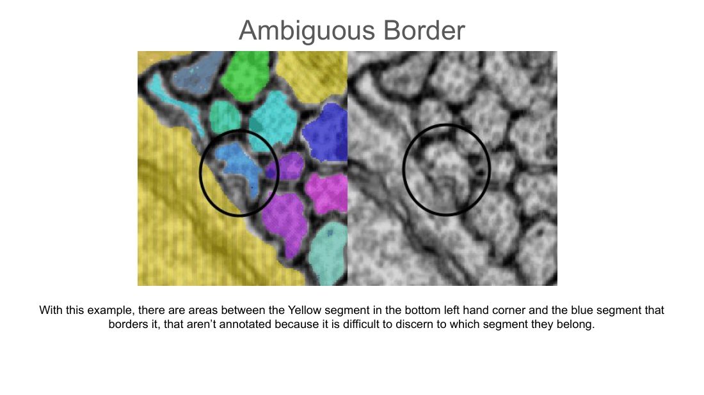

Ground Truth Errors
A reference collection of the error types that come up in ground-truth and proofreading work — what they look like, why they happen, and how the team has fixed them. Compiled from Kyle's error documents and the team's error clips.
Ambiguous borders

Types of cortex errors (Pinky era, 2018)
Kyle's casebook of proofreading errors from the mouse cortex work — each row is a real case with coordinates and a Neuroglancer scene, several with step-by-step fixes. Scenes open in the era's neuromancer instance and may require access.
| Coordinates | Error type | Scene, fix steps & notes |
|---|---|---|
| 81638, 42576, 189 | Slide stitch affecting spine-head continuation | scene — a spine branches off into a stitch; the continuation gets much harder to work out, sometimes too difficult to continue with confidence. |
| 81574, 41811, 485 | Slide stitch affecting spine-head continuation | scene |
| 70294, 51507, 1908 | Huge merger — many objects plus a blood vessel | scene |
| 57713, 71443, 1209 | Black slide + jump causing mergers and wrong continuations | scene · animation — a dendritic branch isn't properly continued after a jump following a black slide; the proper continuation was itself merged with a different dendrite. |
| 118150, 61621, 1845 | Failure to continue a dendritic branch — unclickable sections | scene — keep stepping through slides until supervoxels light up under the mouse again; experience tells you when to give up. |
| 115154, 66959, 1300 | Axonal–dendritic merger (with step-by-step fix) | start → multisplit axon from dendritic base → split off more axon → find the axon continuations → break up their mergers |
| 108615, 65532, 713 | Missing spine head | scene — creep along each dendritic branch in 3D looking for spines without bouton-like heads, or bumps that could be missing spines. |
| 109660, 67111, 810 | Missing spine head | scene |
| 110250, 67364, 821 | Failure to continue a dendritic branch — dark slides | scene |
| 110787, 68298, 876 | Merger / missing spine head / slide jump (with fix) | start · animation → multisplit axon from dendrite → split a second merger to free the spine head — use anchor points to gauge the path and severity of the jump. |
| 69672, 47567, 698 | Dendrite–dendrite merger at multiple points | scene — locate all merge points (61065,47077,2018 · 61667,47172,1998 · 57889,56473,1247 · 58720,56381,1265); splitting spines from the dendritic base zeroes in on the merger source. |
Fly data error breakdown
Kyle's report after reviewing 1,284 fly ground-truth segments (837 error logs, many holding multiple error points):
- 400+ missed connections — by far the most common error, ranging from obvious to very subtle. Tracing from smaller segments outward beats scrutinizing a big segment: the smaller pieces need review anyway, and subtle connections are easier to spot in a focused area.
- ~310 segments that couldn't be located — likely genuinely missing; even 1-pixel dust was easy to spot.
- ~160 merge errors — some from small jumps, but many joined multiple distant segments with no contact at all.
- ~150 pieces of dust.
- 81 logged cases of over-coloring (realistically 100–120 areas) — almost always incorrect inclusion of the thin glia between bordering neurons; the wider the segment, the more likely.
- 16 cases where the correction wasn't fully confident.
- 21 potential orphans out of 435 segments reviewed for orphans.
The hardest areas were tangles of small branches swirling around each other (rosette-like): pinches, intricate wrapping, and jumps left 3–5 segments swapping parts of themselves. Source: "Fly Data Error Breakdown" (Kyle).
Error clips & animations
Larger recordings live in Drive (access required):